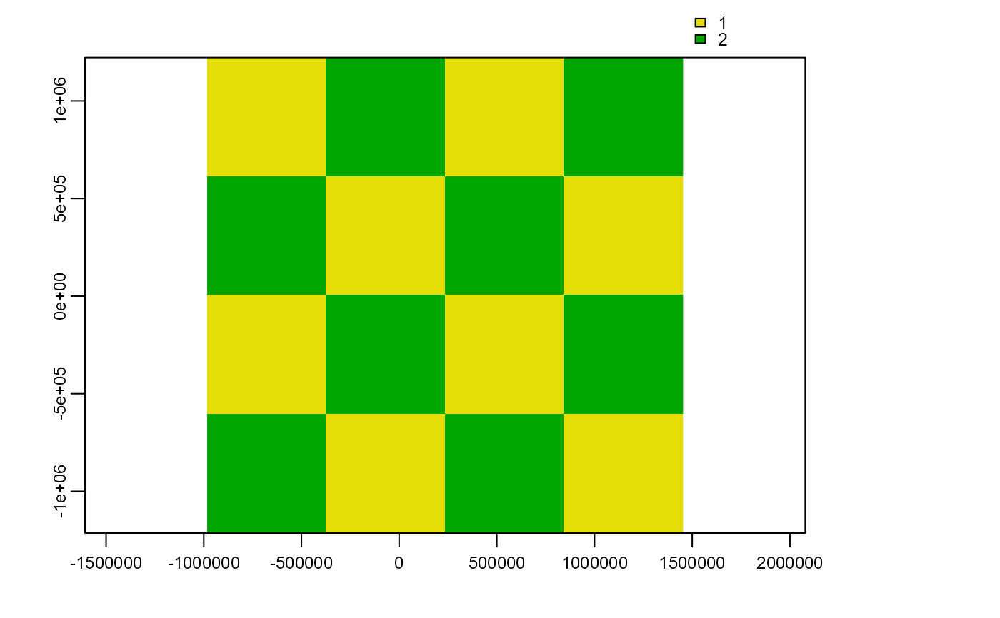
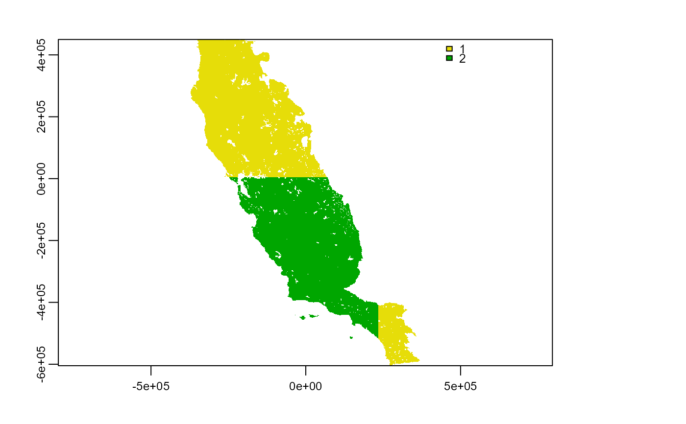

get_block.RdTransform a spatial partition layer to the same spatial properties of environmental variables
get_block(env_layer, best_grid)
| env_layer | SpatRaster object with some environmental variables used in the block_partition or band_partition function. Function always will select the first layer |
|---|---|
| best_grid | SpatRaster object returned by block_partition or band_partition |
A SpatRaster layer with the same resolution and extent than environmental variables
Transform a layer originated from the function block_partition or band_partition to the same properties of environmental variables
# \dontrun{ require(dplyr) require(terra) data(spp) f <- system.file("external/somevar.tif", package = "flexsdm") somevar <- terra::rast(f) # Lest practice with a single species single_spp <- spp %>% dplyr::filter(species == "sp3") part <- part_sblock( env_layer = somevar, data = single_spp, x = "x", y = "y", pr_ab = "pr_ab", min_res_mult = 100, max_res_mult = 500, num_grids = 10, n_part = 2 )#>#> #>#>#>grid_env <- get_block(env_layer = somevar, best_grid = part$grid) grid_env#> class : SpatRaster #> dimensions : 558, 394, 1 (nrow, ncol, nlyr) #> resolution : 1890, 1890 (x, y) #> extent : -373685.8, 370974.2, -604813.3, 449806.7 (xmin, xmax, ymin, ymax) #> coord. ref. : +proj=aea +lat_0=0 +lon_0=-120 +lat_1=34 +lat_2=40.5 +x_0=0 +y_0=-4000000 +datum=NAD83 +units=m +no_defs #> source : memory #> name : .part #> min value : 1 #> max value : 2part$grid#> class : SpatRaster #> dimensions : 4, 4, 1 (nrow, ncol, nlyr) #> resolution : 609000, 609000 (x, y) #> extent : -982685.8, 1453314, -1213813, 1222187 (xmin, xmax, ymin, ymax) #> coord. ref. : +proj=aea +lat_0=0 +lon_0=-120 +lat_1=34 +lat_2=40.5 +x_0=0 +y_0=-4000000 +datum=NAD83 +units=m +no_defs #> source : memory #> name : block #> min value : 1 #> max value : 2# }